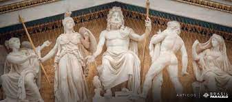
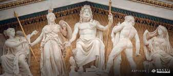

Mitologia Grega
Os Gregos eram politeístas, isto é, adoravam vários deuses, acreditando que esses deuses
tinham forma humana, embora fossem mais belos e poderosos que os homens, imortais e possuidores
de poderes mágicos.
Os deuses gregos revelavam também qualidades e defeitos semelhantes aos dos seres humanos:
apaixonavam-se, sofriam, conheciam aventuras e desventuras e os Gregos falavam deles como se
fossem pessoas: contavam a história da sua vida, as suas lutas, sentimentos...
O conjunto das histórias maravilhosas da vida dos deuses e heróis gregos chama-se mitologia.
Para os Gregos, os deuses eram descendentes da terra - Gaia - e do céu - Urano - e tinham
grandes semelhanças com os homens.
O Monte Olimpo é o ponto mais alto de toda a Grécia, com uma altitude de 2 917m.
Na antiga Grécia, foi considerado a casa dos deuses importantes. Segundo reza a história, a
entrada para o Olimpo fazia-se através de um portão feito de nuvens, isto talvez se possa
atribuir ao fato de o cume da montanha, devido à sua altitude, estar sempre coberto de nuvens.

 
